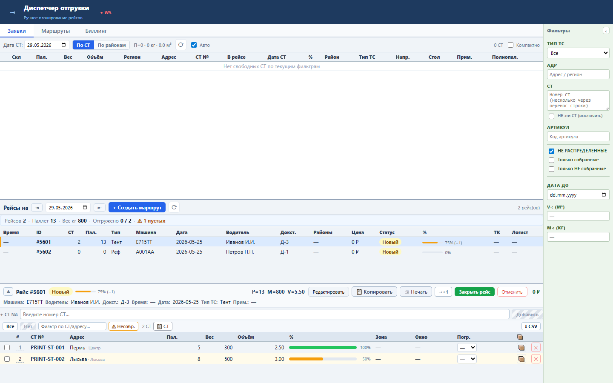
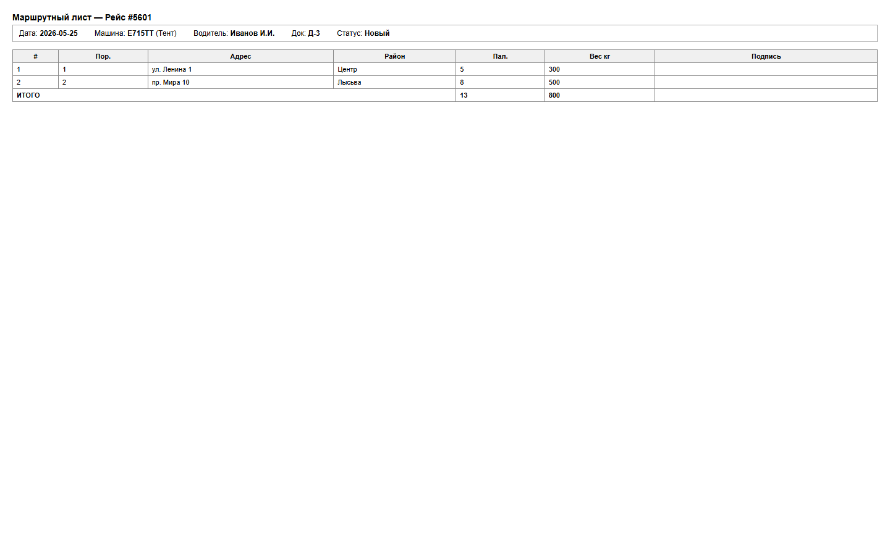
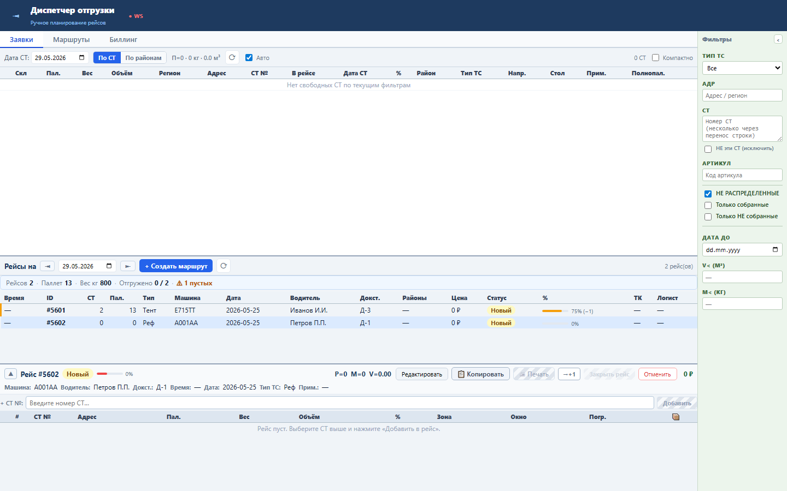

Блок формирует бумажный маршрутный лист из выбранного рейса и его состава СТ без нового backend endpoint.
HTML строится на клиенте из selectedTask и taskSts: дата, машина, водитель, док, статус, строки СТ, паллеты и вес. Новое окно вызывает window.print().
Sprint 56 закрыт functional, load и UI smoke проверками.


